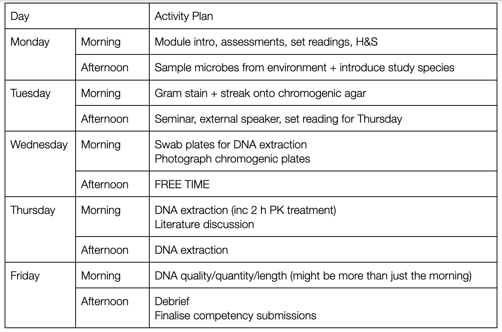

Overview of Week A
Contents
Overview of Week A#

Goals of Week A#
This week you will
Learn about bacterial genome sequencing through seminars and study
Culture medically relevant bacteria
Gram stain bacteria
Prepare DNA from bacterial isolates
Assess the quality and quantity of your DNA extraction
Learning and Study#
We will teach seminars on bacterial genome sequencing. You will have to read around this topic. We will set reading on Tuesday and hold a journal club to discuss the papers on Thursday. You must have read your papers and be prepared to discuss for this to work. Journal clubs are a great way to get taught a lot of information very quickly but you will have to contribute.
Assessed Portfolio Activities#
Electronic Lab Notebook#
This week you will begin your Google Docs electronic lab notebook. You will familiarise yourself with how to keep a notebook, what to record and when by viewing examples and discussion with academic staff.
Competency Portfolio#
This week you will have two competencies to document. These are described in more detail in the manual below.
Bacterial Identification Figure
DNA Extraction (quantity/quality/length) Figures
+———————————————————————–+
| Portfolio Competency 1: You should submit a single powerpoint |
| slide of a professionally formatted figure showing identification of |
| at least two environmental bacterial isolates and the study species, |
| using two complementary techniques. Your figure should |
| include: {width=”1.498128827646544in” |
| height=”1.498128827646544in”} |
| |
| - High quality images with appropriate labels |
| |
| - Multiple sub-panels with labels (i.e. A, B, C etc) |
| |
| - A figure title and caption including all relevant information. |
+=======================================================================+
+———————————————————————–+
{width=”1.498128827646544in” |
| height=”1.498128827646544in”} |
| |
| - High quality images with appropriate labels |
| |
| - Multiple sub-panels with labels (i.e. A, B, C etc) |
| |
| - A figure title and caption including all relevant information. |
+=======================================================================+
+———————————————————————–+
+———————————————————————–+
| Portfolio Competency 2: You should submit a single powerpoint |
| slide of a professionally formatted figure showing evidence (e.g. |
| image/table/graph) of the DNA quality/quantity/length for your |
| group’s chosen sample. Your figure should |
| include:{width=”1.498128827646544in” |
| height=”1.498128827646544in”} |
| |
| - High quality images with appropriate labels |
| |
| - Multiple sub-panels with labels (i.e. A, B, C etc) |
| |
| - A figure title and caption including all relevant information. |
+=======================================================================+
+———————————————————————–+
Bacterial Identification#
We are going to start by culturing bacteria from some clinically relevant samples, and then using traditional microbiology techniques to identify those bacteria. There are two techniques we will use:
Culturing onto chromogenic agar
Gram staining and microscopy
We are not providing you with step-by-step instructions of how to do this - we are giving you some background information and materials, and you need to work out how best to do this so you can achieve the competency standard.
You should also culture and Gram stain the two experimental strains we
will use for sequencing, and include these in your
figures. {width=”6.1344739720035in”
height=”4.483985126859142in”}
{width=”6.1344739720035in”
height=”4.483985126859142in”}
Agar plates available
Nutrient agar (LB)
[[CHROMagar]{.underline} *[Staph
aureus]{.underline}*](https://www.chromagar.com/wp-content/uploads/2021/11/LF-EXT-005-V8.0.pdf)
[[Brilliance UTI Clarity
Agar]{.underline}](https://www.thermofisher.com/order/catalog/product/CM1106B?SID=srch-srp-CM1106B)
[[CP ChromoSelect
Incubators available: 37oC, 44oC
Plating out bacteria#
Remember that there are two main methods for plating bacteria - streak plates and spread plates. You need to decide which is most appropriate. For both methods you will need to observe good sterile technique.
 {width=”4.051140638670166in”
height=”1.7300853018372704in”}
{width=”4.051140638670166in”
height=”1.7300853018372704in”}
Figure 1: Streak plate technique. Streak plates are used to isolate individual colonies of bacteria
 {width=”6.5in” height=”2.2777777777777777in”}
{width=”6.5in” height=”2.2777777777777777in”}
Figure 2: Spread plate technique. Streak plates are used to count the number of bacteria in a sample
#
Gram Staining#
You will perform a Gram-stain test on the bacteria that you have subcultured. Briefly, the procedure enables you to differentiate bacteria on the basis of differences in the structure of the bacterial cell wall, and in particular on the different thicknesses of the peptidoglycan component. Gram-positive bacteria have a thick peptidoglycan cell wall, whilst Gram-negative have a thin peptidoglycan cell wall (Figure 1).
 {width=”4.25in” height=”3.375in”}
{width=”4.25in” height=”3.375in”}
Figure 1. Differences in cell wall structure in Gram-positive and Gram-negative bacteria.#
In the Gram-stain test (Figure 2), you undertake a series of staining steps on bacterial cells that have been ‘heat fixed’ onto a microscope slide. Firstly, heat-fixed cells are treated with a solution of Crystal Violet which is taken up into the cell, staining the cells dark purple. Secondly, cells are then immersed in Gram’s iodine. The iodine forms an insoluble complex with the Crystal Violet stain. This complex can be extracted from Gram-negative bacteria by the addition of a solvent such as alcohol (NB today you will be using ‘Gram’s Differentiator’), but the complex is retained within Gram-positive bacteria, as the peptidoglycan layer is dehydrated by the alcohol, preventing the Crystal-violet-iodine complex from being removed from the cell. At this stage Gram-positive cells remain dark purple, whilst Gram-negative cells are colourless. Finally, cells are washed with the counterstain safranin, which stains the Gram-negative cells pink, whilst Gram-positive cells remain purple. Cells can then be viewed using a compound microscope (Figure 3), using the x100 oil immersion lens.
 {width=”3.0729166666666665in”
height=”3.2232731846019247in”}
{width=”3.0729166666666665in”
height=”3.2232731846019247in”}
Figure 2. Differential staining of Gram-positive and Gram-negative bacteria using the Gram stain procedure.#
Morphology
In addition to distinguishing between bacteria with respect to their Gram-reaction, the use of microscopy also enables you to describe the morphology (the form and structure) of cells. Typical cell morphologies are shown in Figure 4. In this practical you will also be describing the morphology of your cells, which can also be used as a diagnostic feature.
 {width=”5.2785498687664045in”
height=”2.2656255468066493in”}
{width=”5.2785498687664045in”
height=”2.2656255468066493in”}
Figure 4. Examples of common morphologies of bacterial cells viewed using a light microscope.#
Gram Stain: Practical Instructions#
Equipment required
Agar plates that you set up in Practical 1
A Bunsen burner and tile stand
A metal inoculation loop
Four Glass slides
A bottle containing 5ml distilled water
A pair of forceps
A clock timer
A wash bottle containing distilled water
A compound microscope
On each bench there are also two workstations set up (one workstation per four students) for performing Gram stains. At each workstation, there are the following materials:
A staining tray and staining rack
A bottle/dropper containing Crystal violet solution
A bottle/dropper containing Gram’s iodine solution
A bottle/dropper containing decolorizing solution (Gram’s
Differentiator)
A bottle/dropper containing Safranin solution
Boxes of Lens tissue
Bottles of microscope immersion oil
Blotting paper
Video to explain gram staining technique, see [https://www.youtube.com/watch?v=sxa46xKfIOY]{.underline}
2. Using a permanent marker pen, label each of the four slides at one end with a name and/or number that will enable you to identify which slide corresponds to which bacterial isolate.
3. Light your Bunsen burner and rotate the sleeve so that you have a bright blue (roaring) flame.
4. Hold the inoculation loop by the long handle and then heat the small circular ‘loop’ in the middle of the blue flame, until the loop glows bright red.
5. Using the flame-sterilised inoculation loop, place a single small drop of distilled water onto the centre of the microscope slide by dipping the loop into the bottle containing 5ml distilled water and then touching the loop onto the glass slide. [NB]{.underline} Only a very small drop of water should be used since a larger amount will take too long to dry. If you add too much water, wipe the slide clean with a clean tissue and start again.
6. Hold the inoculation loop by the long handle and then heat the small circular ‘loop’ in the middle of the blue flame, until the loop glows bright red.
7. Quickly touch the hot surface of the loop onto an un-colonised area of the surface of the agar plate that contains the microbial colony that you plan to use for the Gram stain.
8. Now, touch the loop onto a [single colony]{.underline} that you are using for the Gram stain. Ensure that you can see that some of the colony has adhered to the loop. It is important [NOT]{.underline} to overload the slide for the Gram stain test, therefore, only very lightly touch the colony selected. Do not put the inoculation loop down on the bench.
9. With the inoculation loop carrying the bacteria you have selected, now gently smear the cells on the loop into the droplet of water on the glass slide. Try to ensure that you maintain only a very small smear in the centre of the slide and don’t spread it too far. Leave the slide to dry on the bench in a place where it will not contact or contaminate anything.
10. Now sterilise the inoculation loop by heating the ‘loop’ in the middle of the blue flame, until the loop glows bright red. When cool, this can then be placed down on the bench.
11. It is very important that the smear on the glass slide should be dry before doing this next step. Once the smeared droplet of water containing the bacteria on the slide has dried, pick up the glass slide securely using the forceps. Hold the slide with the smear facing upwards and pass the slide briefly through the centre of the Bunsen burner blue flame. This will leave a heat-fixed smear of bacterial cells on the slide ready for staining. Watch a demonstrator do this step first. Take great care when wearing gloves to do this step, to avoid a possible burn when passing the slide through the flame. Use forceps to handle the slides rather than touching them directly while using the Bunsen burner.
12. Repeat steps 4-11 for all of the samples on which you will be performing a Gram stain.
13. Turn off your Bunsen burner - the staining solutions are flammable!
+———————————————————————–+ | > [NB]{.underline} The next stages of the procedure are | | > time-sensitive so read thoroughly through the following steps | | > before starting. | +=======================================================================+ +———————————————————————–+
14. At the staining workstation, place the staining rack across the staining tray. Now place your four microscope slides horizontally across the staining rack with the smear side facing upwards.
15. Using the bottle/dropper, cover the slides with Crystal Violet.
16. After 30 seconds, wash off all of the Crystal Violet solution from the slides using the wash bottle containing distilled water.
17. Using the bottle/dropper, cover the slides with Gram’s iodine.
18. After 30 seconds, wash off all of the Gram’s iodine solution from the slides using the wash bottle containing distilled water.
19. Using forceps and keeping the slide over the staining rack, hold the slide pointing downwards into the staining tray at an angle and using the bottle/dropper, flood the slides with Decolourising solution (Gram’s Differentiator), until no further purple stain is removed. NB apply the Decolourising solution rapidly in a stream of solution not gently as drops.
20. Immediately, wash off all of the Decolourising solution from the slides using the wash bottle containing distilled water.
21. Using the bottle/dropper, cover the slides with Safranin solution.
22. After 1 minute, wash off all of the Safranin solution from the slides using the wash bottle containing distilled water.
23. Place the slides onto clean blotting paper and blot the slide dry.
24. To use the microscope you must make sure your gloves are clean, so if they are stained or contaminated, change them.
25. Examine the Gram-stained cells under the microscope. Set the microscope to the x100 oil immersion lens and place a couple of drops of microscope immersion oil on top of the stained smear on the glass slide.
26. Focus the microscope and observe the microbial cells which are visible on the glass slide.
27. Take a professional standard photograph of your microbial cells.
Wash your hands with soap and water immediately (see page 8) for detailed instructions
Using the Microscope#
The microscope is a key piece of equipment for looking at cells - we will be developing your microscopy skills throughout this module and through the rest of your programme. Today we will be doing some pretty ‘rough and ready’ microscopy to look at our gram stained slides - you will learn more sophisticated strategies for getting really good images later in the module.
Video for good microscopy practice: [https://www.youtube.com/watch?v=cnj2y_Bpu-w]{.underline}
 {width=”5.979166666666667in”
height=”3.4270833333333335in”}
{width=”5.979166666666667in”
height=”3.4270833333333335in”}
[NB your microscope might be slightly different to this, but the basic design will be the same].
+———————————————————————–+ | Care of the Microscope | | | | > Please remember that it is a delicate precision instrument – you | | > don’t need to be scared of it, but the more carefully you set the | | > microscope up the better the quality of your images | | | | - Never force any control. | | | | - Always lift it by grasping the limb firmly. | | | | - Always replace the plastic cover after use to keep dust off. | | | | - Keep the glass above the light source free from dust and dirt. | | | | - Keep the top lenses of the objectives clean [lens tissue | | > available – do not use regular tissue]. | | | | - Do not attempt to remove or dismantle any component. | | | | If you aren’t sure what to do, find a demonstrator or the practical | | organiser and ask for help. | +=======================================================================+ +———————————————————————–+
#
Focus the specimen#
Set up the microscope with the x4 objective pointing towards the
specimen
Put the slide on the stage with the material to be studied on the
upper surface of the slide, and clip into place
Switch on the illumination and turn to the lowest brightness setting
that is still visible
Use the stage controls to move the slide so that the circle of light
falls in the middle of the specimen
While looking at the microscope from the side, move the stage up to
its highest position using the coarse focus dial (the large dial)
Look down the right eyepiece of the binocular head (keep left eye
shut). Slowly lower the stage using the coarse focus until you see the specimen come roughly into focus
Open both eyes and slide the two eyepieces together or apart until
the two images fuse perfectly. Do not strain or squint: keep the eyes relaxed (looking at infinity) or the images will not fuse.
Re-focus with the fine focus (small dial) control if necessary. Note
and remember the reading scale; this is your interpupillary distance (average 62mm), which you always set before using any binocular optical instrument.
Once you have a focussed image using the x4 objective, swing the x10
objective into place. Do not move the focus dials while doing this - you need to keep the slide in the same place!
Adjust the fine focus dial only until the image comes into focus.
Once you have focussed using the x10 objective, repeat for the x40
objective. Only use the fine focus dial.
Once you have focussed using the x40, you are ready to use the x100 objective to see the individual bacterial cells. However, due to the optical properties of the microscope you will not get a clear image looking straight down the x100 lens. You need to add some microscope immersion oil to get a clear image.
Swing the x40 objective lens away from your sample, but do not put
the x100 lens into place.
Place a drop of immersion oil on the centre of your sample.
Swing the x100 objective lens into place. Adjust the fine focus dial
until you get a sharp focussed image of the cells. Do not go back to the x40 lens once there is oil on your sample!
Once you have finished observing your cells, remember to wipe the
x100 lens clean with the special lens tissue - do not use normal tissue as it will damage the microscope.
+———————————————————————–+ | REMEMBER | | | | You should always start with the lowest power lens (i.e. x4) and | | focus your image, then increase to the next power lens (i.e. x10). | | | | You might need to adjust the fine focus slightly when you change | | lenses, but you shouldn’t need to adjust the coarse focus. | | | | If you can no longer ‘find’ your sample because it is really out of | | focus, go back to a lower powered lens and start again - you will | | never find it by just moving the dials back and forward under a high | | powered lens! | +=======================================================================+ +———————————————————————–+
Upon completion of the practical, WASH your hands with soap and water [immediately]{.underline} following the procedure shown below
 {width=”5.295145450568679in”
height=”7.463542213473316in”}
{width=”5.295145450568679in”
height=”7.463542213473316in”}
#
Bacterial DNA Extraction#
Traditional identification methods for bacteria, such as gram staining, morphology description, and selective agars, are helpful for getting general information about a bacterial species of interest; however, they cannot tell us everything we need to know. Often, we need to be able to identify bacteria down to the strain level and we can do this in a matter of days by looking at the genomes of bacteria. In order to perform genomic analysis we must sequence, or read the bases of, the DNA from bacterial isolates, such as the plates you streaked earlier this week. Before DNA can be sequenced though it must be pulled out of the bacterial cells by performing DNA extraction.
Cell Lysis#
There are a variety of methods used to extract DNA from bacteria, but the method you will be using is a fairly standard process that utilises multiple types of cell lysis. This approach can be beneficial because it can be difficult to break open bacterial cells without destroying their DNA. Additionally, the differences in morphologies and cell wall structures of bacterial species means that DNA extraction protocols tend to be more effective when a variety of approaches is applied. For instance, the fragility of gram negatives’ cell walls make them particularly vulnerable to mechanical lysis, such as the use of garnet beads and vigorous shaking applied in the methods below.
Mechanical lysis is a common and effective method used for DNA extraction, but it is not very effective on gram positive species due to their strong, thick cell walls. Often an additional form of chemical lysis is necessary to break all the layers of peptidoglycan in these cells. To help you extract DNA from gram positive cells, you will be using SDS in the Water Lysis Additive, which is a detergent, not unlike a tough dish soap you have at home, that helps break up lipids. You will also use a form of enzymatic lysis to help SDS break the peptidoglycan layers by putting Proteinase K in with your sample. Proteinase K is a protease enzyme that digests proteins and, like penicillin, was originally discovered in the extracts of a fungus!
 {width=”4.948910761154855in”
height=”2.227557961504812in”}
{width=”4.948910761154855in”
height=”2.227557961504812in”}
Figure 1: Example of chemical lysis using a detergent, such as SDS.
Inhibitor Removal#
Once all the cells in a sample, such as the colonies you will be scraping off of your plates, are lysed and the DNA is freely floating, we must remove any compounds that could affect later steps in our lab work. Cell lysis leads to the broken bits of cells freely floating in your sample and involves the use of a variety of chemicals, both of which may inhibit the solutions we have to use later for sequencing. To remove these components and clean up your DNA you will be using 2 methods. The first step is using Flocculant Solution, an agent that helps to separate solids, like pieces of cells, and liquids, like the solution containing your DNA, by compressing tiny particles and forcing them to sink to the bottom of a container.
 {width=”3.843312554680665in”
height=”2.294154636920385in”}
{width=”3.843312554680665in”
height=”2.294154636920385in”} {width=”0.900508530183727in”
height=”0.23389326334208224in”}{width=”0.900508530183727in”
height=”0.3639818460192476in”}{width=”1.3030402449693788in”
height=”1.4948326771653544in”}
{width=”0.900508530183727in”
height=”0.23389326334208224in”}{width=”0.900508530183727in”
height=”0.3639818460192476in”}{width=”1.3030402449693788in”
height=”1.4948326771653544in”}
Figure 2: Inhibitor removal using flocculation solution to coagulate and compress solids, separating them from a solution’s liquid.
Next, to ensure your final solution contains only clean DNA, solid phase reversible immobilisation (SPRI) is implemented. This method utilises the inherent negative charge of DNA to pull it out of the solution by adding magnetic beads that have a special surface, which DNA attaches to and allows us to dispose of the rest of the solution. Additionally, SPRI is ideal for genome and long read sequencing, such as Nanopore sequencing, because it is a very gentle method that helps to select sequences larger than 1kb.
 {width=”5.874057305336833in”
height=”1.9823797025371828in”}
{width=”5.874057305336833in”
height=”1.9823797025371828in”}
Figure 3: Solid phase reversible immobilisation using magnetic beads to attract and gather DNA, allowing for the removal of impurities.
DNA Extraction Assessment#
Once your DNA is extracted and cleaned up, you will have to make sure there is enough of your DNA and that it is long and clean enough to sequence. DNA sequencing is an arduous, expensive process and, therefore, you need to make absolutely sure that the extracted DNA meets the minimum requirements for the Nanopore sequencing machine. In Week B your group will be sequencing the DNA that was extracted, but only one of your 3 samples can go on to be sequenced. Using the methods below for DNA extraction assessment, you will determine whether your sample meets the sequencing requirements and, as a group, pick one to go into the sequencing machine. Your Portfolio Competency 2 will require the results you produce in this stage to be the evidence of which sample your group chooses and why.
Length Estimation#
In order to sequence a bacterial genome, your DNA sequences will have to be quite long. The extraction protocol described below is relatively gentle and that helps to ensure your DNA is not too broken to eventually form a whole genome. The average length of your extracted DNA sequences can be assessed by running it through gel electrophoresis. The DNA ladder you will be using is for long sequences, like those for genome sequencing with Nanopore technology, and, therefore, you should see bands towards the top of your gel. The ideal length for your DNA sequences is equal to or greater than 10-20kb.
 {width=”6.024880796150481in”
height=”4.639628171478565in”}
{width=”6.024880796150481in”
height=”4.639628171478565in”}
Figure 4: Example of a gel image with 4 samples, only one of which has DNA long enough for genome sequencing.
Quantity of DNA#
In addition to having long enough DNA, you have to make sure there is enough to actually sequence. Too little DNA and there will not be enough for the device to give you sequences. Too much DNA and you will essentially overwhelm the device, again preventing it from giving you sequences. You will use a machine for quantifying DNA, called a Qubit fluorometer, which will measure the concentration of DNA in your solution (e.g. 13 nanograms of DNA in 1 microliter of Elution Buffer). The amount of DNA that you must have to sequence your sample is 25-50 ng/µL.
 {width=”5.377504374453193in”
height=”1.6804702537182852in”}
{width=”5.377504374453193in”
height=”1.6804702537182852in”}
Figure 5: General process in Qubit quantification, where a fluorescent dye that attaches to DNA is added and, once attached, emits a special signal. The DNA is quantified by measuring the intensity of that signal.
Quality of DNA#
Finally, you must ensure that your DNA is clean enough to be sequenced. If there are too many salts, proteins, or any other inhibitory compounds leftover from DNA extraction, your DNA cannot be sequenced. You will be using a Nanodrop spectrophotometer to determine whether your sample is clean enough. This machine passes an ultraviolet light through your sample and measures the light that passes through, the absorbance is measured and plotted. Your results will be a plot with the absorbance on the y-axis and the wavelength in nanometers on the x-axis. Ideally, your plot will look very similar to the one shown below, which shows that there is a lot of DNA and very little of anything else.
 {width=”4.580007655293088in”
height=”3.2451312335958007in”}
{width=”4.580007655293088in”
height=”3.2451312335958007in”}
Figure 6: Plot of spectrophotometer results from a nanodrop machine with the absorbance range (10mm equivalent) as the y-axis and the wavelength in nanometers as the x-axis. DNA and RNA are shown to have a high level of absorbance at 260 nm, while salts have a low absorbance at 230 nm and proteins have a low absorbance at 280 nm.
+———————————————————————–+ | Tips for Successful Lab Research | | | | Keep these in mind throughout your research to help prevent mistakes | | and ensure your work goes smoothly. | | | | - Keep your workstation clean and be careful to not contaminate | | > your samples and solutions | | | | - Carefully and clearly label all your tubes | | | | - Create a naming system for tubes and samples in your group to | | > prevent confusion | | | | - Always double check that you have the correct pipette with the | | > correct amount BEFORE drawing up all solutions | | | | - In fact, always double check that you are drawing up the correct | | > solution - using the wrong solution can ruin the whole | | > experiment! | | | | - Use your non-dominant hand, such as a pinky above the tip, to | | > help balance your pipette (ask a demonstrator if unsure about | | > this technique) | | | | - As you progress through a protocol, check off completed steps | | | | - Take thorough lab notes throughout the lab work, including notes | | > on naming systems, issues encountered, and all results - even | | > take photos if you need to! | | | | - Always ask questions if unsure of anything! | +=======================================================================+ +———————————————————————–+
DNA extraction#
Modified modular universal DNA (muDNA) extraction protocol for eventual genome sequencing of bacterial colonies.
Equipment required
P1000, P200, and P10 pipettes and pipette tips
1-1.4 mm diameter sterile garnet beads
2 ml screw cap tube
Sterile plastic inoculation loop
TissueLyser II
Thermomixer
Centrifuge
1.5 ml LoBind tube x3
Hulamixer
Magnetic tube stand
Each group of three students will have a workstation for the next section of research. In the end, only one sample from each group will be used for sequencing, but for this next bit of lab work each student will use the protocol below to extract a sample taken from the isolated cultures grown earlier in the week; therefore, each student will go through the DNA extraction protocol described below for their own sample, but each group will also work together to complete this protocol successfully, with 3 extractions in total. Work with your group before starting to determine a naming system for your samples so that you know which tube belongs to who. At each workstation, there are the following materials:
Appropriate pipettes and pipette tips (P1000, P200, and P10)
Sterile plastic inoculation loops x3
A container of sterile garnet beads
2 ml screw cap tubes x3
1.5 ml LoBind tubes x9
Tube rack
Red top disposal jar
Lysis solution
Water lysis additive
Proteinase K
Flocculant solution
Wash solution
Elution buffer
Scale
Weigh boat (sterile)
Pen
BEFORE STARTING#
Take DNA Extraction Bead Solution from the fridge and allow it to reach room temperature. Vortex to mix thoroughly.
Lysis#
Add 0.5 g (2 X sample weight) of 1-1.4 mm diameter sterile garnet
beads to a 2 ml screw cap tube
Add 550 µL of Lysis Solution
Add 200 µL of Water Lysis Additive
Add 60 µL of Proteinase K and vortex briefly
Take a sterile loop and scrape 1-3 colonies (enough to clearly see
the bacteria gathered on the loop) off of the agar plate you streaked yesterday - be careful to only scrape up bacteria and not the agar!
Put the loop into the solution of the 2 ml screw cap tube and gently
shake the loop until the colonies have fallen off in the liquid
Place in TissueLyser II (or similar horizontal beating apparatus) at
30 Hz for 10 minutes
Place in Thermomixer 400 rpm at 56°C for 2 hours
Place in TissueLyser II (or similar horizontal beating apparatus) at
30 Hz for 10 minutes
Centrifuge 10000xg at room temperature for 1 minute
Transfer 700 µL supernatant to a 1.5 ml LoBind tube
Inhibitor removal#
Add 200 µL (0.3 X volume) of Flocculant Solution
Invert several times to mix and incubate on ice for a minimum of 10
minutes
Centrifuge 10000xg at room temperature for 2 minutes
Without disturbing the pellet, transfer 600 µL supernatant to a
fresh 1.5 ml LoBind tube
SPRI DNA binding#
Add 600 µL (1 X volume) of DNA Extraction Bead Solution
Place on HulaMixer (continual rotation, 30 01 orbital rpm,
reciprocal and vibro off) for 10 minutes
Place on magnetic stand until supernatant is clear and beads are
bound towards magnet
While on the stand carefully remove and discard supernatant without
disturbing beads
+———————————————————————–+ | > The next stages of the procedure are time-sensitive so read | | > thoroughly through the following steps before starting. | +=======================================================================+ +———————————————————————–+
Wash#
Add 1000 µL Wash Solution
Incubate at room temperature for 30 seconds
While on the stand carefully remove and discard supernatant without
disturbing beads
Repeat 3 steps above a further time
Centrifuge tube for 1 second (be very brief and ensure the beads are
facing downwards) and place back on the magnetic stand ensuring beads are bound towards the magnet.
Remove all remaining Wash Solution with a 10 µL pipette
Air dry tube with cap open until beads are completely dry (i.e. no
longer shiny), approximately 10-20 minutes
+———————————————————————–+ | > Be very careful in steps 20-26 to not disturb the magnetic beads! | | > | | > When putting your pipette into the tube, be slow and controlled so | | > that the tip does not touch the beads. When putting solutions into | | > the tube, be very careful to not let the liquid hit the beads as it | | > leaves the pipette. When taking your pipette out of the tube, do | | > not allow the tip to hit the sides of the tube. A steady hand and 3 | | > points of contact will help! | +=======================================================================+ +———————————————————————–+
Elution#
Add 100 µL Elution Buffer (55°C) and gently flick to resuspend
beads (ensure all beads are resuspended with no clumps)
Centrifuge tube for 1 second
Place in Thermomixer 550 rpm at 55°C for 10 minutes
Centrifuge tube for 1 second
Place on magnetic stand until supernatant is clear and beads are
bound towards magnet
Carefully transfer eluate to a fresh 1.5 ml LoBind tube without
disturbing beads
Assessment of DNA extraction#
We are now going to assess the quality and quantity of your extractions before preparing your samples for sequencing (Week B). This will also be used to prepare Portfolio Competency 2.
Equipment required
P1000, P200, P20, P10, and P2 pipettes and pipette tips
Gel tray
Gel comb
Melted agarose
Electrophoresis tanks
PCR strip tubes
1.5 ml LoBind tubes
10mL tube
Qubit tubes
Qubit machine
Nanodrop spectrophotometer
KIMTECH lint-free wipe
Each group of three students will have a workstation for the next section of research. In the end, only one sample from each group will be used for sequencing, but for this next bit of lab work each student will use the protocols below to assess the DNA extraction you performed previously. While you should be working the sample you extracted for the next steps, the total number of samples for your group should be used for calculations. The work in this protocol should be split up within your group by the samples you worked with previously, but the working solutions made in these protocols should be shared in your group. At each workstation, there are the following materials:
Appropriate pipettes and pipette tips (P1000, P200, P20, P10, and
P2)
Gel tray
Gel comb
A breaker of agarose
Masking tape
Pen
PCR strip tubes
GeneRuler 1kb Plus DNA Ladder
Gel electrophoresis loading dye
1.5 LoBind tubes
10mL tube
Qubit tubes
Elution buffer
Qubit buffer
Qubit dye
To assess the quality of your DNA extraction we will use three methods:
Gel Electrophoresis#
Remove extracted DNA from the freezer, allowing it to reach room temperature, and watch a demonstration of how to pour a gel before starting.
Seal the ends of your gel tray with tape and place the comb at the
top to create a row of wells.
If it hasn’t already been added, get one of the technicians to add
the GelRed stain to your agarose. Take the melted agarose provided and pour steadily into the tray avoiding bubbles.
Allow to set for 20-30 minutes
Remove the combs carefully and take off the sealing tape being
careful that the gel doesn’t slip out of the tray.
Place the tray and gel in the electrophoresis tank (power connection
on the right) with the wells furthest from you and slowly fill with sodium borate running buffer until the gel is just submerged.
Put 5 µL of extracted DNA into a PCR strip tube.
Load 5 µL of the GeneRuler 1kb Plus DNA ladder (diluted 1:1)
into the first lane of the gel.
Add 1 µL of loading dye to the 5 µL of extracted DNA, mix and
load 6 µL of this onto your gel. Record the order of loaded samples onto the templates by each gel tank
Place on the lid and ask a demonstrator to connect to the power
supply at ~150 volts.
Run the gel for ~90 minutes at 200V
After the gel has been removed and washed you will be called up to
take a gel photo.
Annotate your photograph with the contents of each lane and the size
of your bands. Are the bands the expected sizes? Does your DNA meet sequencing requirements?
 {width=”2.9829002624671914in”
height=”5.0263812335958in”}
{width=”2.9829002624671914in”
height=”5.0263812335958in”}
Qubit Quantification#
To accurately quantify all species of interest, DNA quantification using Qubit will be performed on both the initial DNA extracted from your plate and on a 1 in 10 dilution of each sample. Remove DNA Standard #1 and #2 from the freezer and allow them to reach room temperature before beginning.
Add 1 µL of extracted DNA to 9 µL of Elution Buffer in a 1.5 ml
LoBind tube to create the 1 in 10 dilution for each sample.
Put 5 µL of the 1 in 10 dilution into a PCR strip tube.
Put 5 µL of extracted DNA into a PCR strip tube.
Calculate the amount of Qubit buffer required using this
equation, where n is equal to the number of [samples]{.underline} you have:
+———————————————————————–+ | Qubit buffer required (µL) = 199 x ((n x 2) + 3) | | | | Example for 4 samples: | | | | (n = 4) | | | | 199 x ((4 x 2) + 3) = 199 x 11 = 2189 µL of Qubit buffer | +=======================================================================+ +———————————————————————–+
Calculate the amount of Qubit dye required using this equation,
where n is equal to the number of [samples]{.underline} you have:
+———————————————————————–+ | Qubit dye required (µL) = 1 x ((n x 2) + 3) | | | | Example for 4 samples: | | | | (n = 4) | | | | 1 x ((4 x 2) + 3) = 1 x 11 = 11 µL of Qubit dye | +=======================================================================+ +———————————————————————–+
Prepare the Qubit Working Solution by adding the required
amounts of Qubit buffer and dye to a 10mL tube, then vortex briefly
Vortex both DNA standards very thoroughly.
Add 190 µL of the Working Solution and 10 µL of Standard #1
to a Qubit tube, then vortex briefly
Add 190 µL of the Working Solution and 10 µL of Standard #2
to a Qubit tube, then vortex briefly
For each sample, add 198 µL of Working Solution and 2 µL of
extracted DNA to a Qubit tube, then vortex briefly
For each dilution, add 198 µL of Working Solution and 2 µL of
extracted DNA dilution (1 in 10) to a Qubit tube, then vortex briefly
Ask a demonstrator to show you the qubit machine and quantify the
DNA in each Qubit tube, recording results as they appear on the screen.
Repeat quantification in the Qubit machine for all samples and
dilutions (not the DNA standards) a further 2 times, recording results as they appear on the screen.
+———————————————————————–+ | > It is recommended that you make a table for your group’s Qubit | | > results with 2 columns, one for the tube name and one for the | | > quantification result. | +=======================================================================+ +———————————————————————–+
Nanodrop Quality Assessment#
A demonstrator will set up the Nanodrop software and blank the machine for your group, then, after you measure your samples, your results will be sent to you.
As shown by the demonstrator, use a KIMTECH wipe to wipe the sensor
and sampling arm.
Gently place 2 µL of your extracted DNA onto the sensor (as shown
below and by the demonstrator).
Lower the sampling arm and the demonstrator will run the analysis.
Repeat this process with your 1 in 10 dilution.
 {width=”5.134897200349957in”
height=”1.797214566929134in”}
{width=”5.134897200349957in”
height=”1.797214566929134in”}